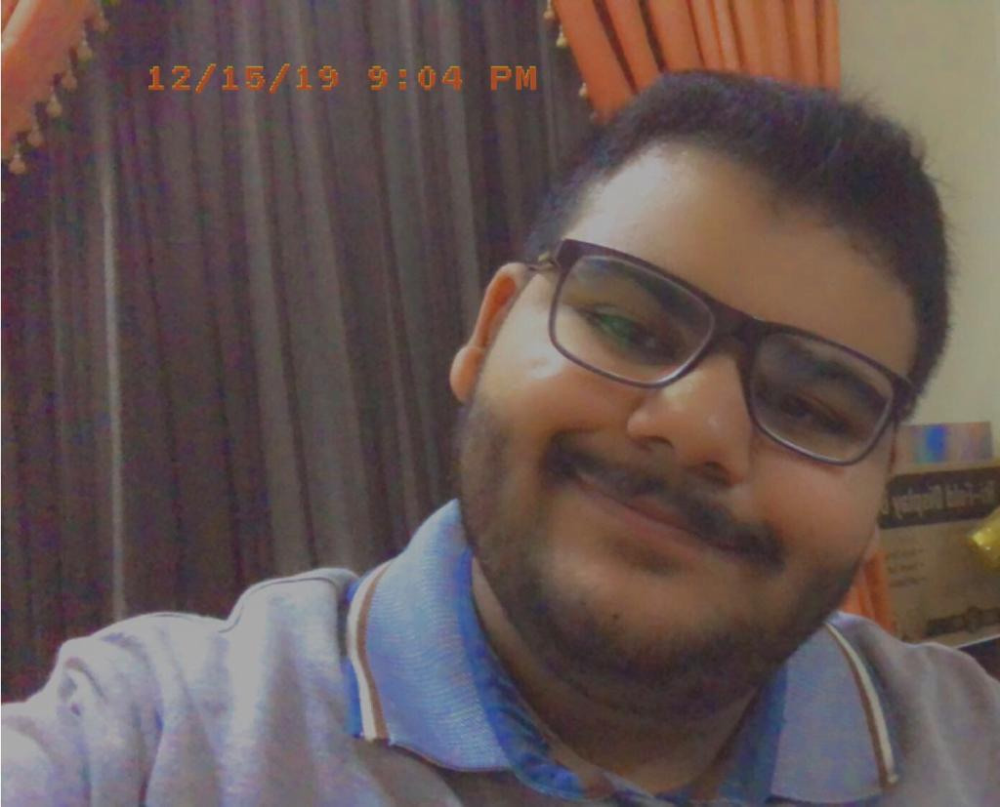

Visiting Turkey
About Me:
Hello, my name is Nasser Hameeda and I am 19 years old. Currently, I am a student at the British University of Bahrain. My hobbies include reading, gaming, watching various TV shows, and movies.
I have created this website as a personal blog to share my favorite country that I have visited which is Turkey. I'm going to share my favorite parts of the trip, the different food, culture, and beautiful scenery I have experienced whilst visitng.
Fun fact, I have visited Turkey twice and have went to Istanbul, and Boursa which are two big cities that are very different from each other. Istanbul, is a more modernized area of Turkey. However, Boursa is filled with natural scenery and ancient areas.